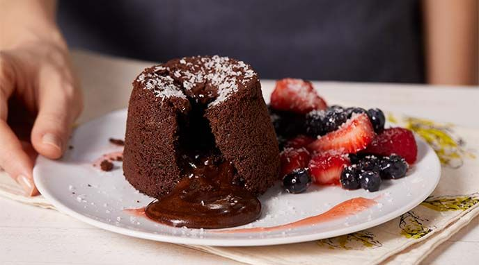

¡Hola! Me llamo Mateo y decidí crear este blog porque me gusta cocinar. Para mí, la cocina es un espacio de creatividad, de disfrute y también de compartir.
Desde chico me interesaron los sabores, los aromas y cómo una receta puede transmitir emociones. En este blog vas a encontrar recetas simples, caseras, con mucho corazón.
Mi objetivo es que te animes a cocinar, a experimentar y a disfrutar del proceso tanto como del resultado. ¡Gracias por visitar y espero que encuentres inspiración en cada plato!